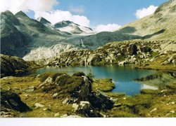

Lakes In the Adamello Brenta Natural Park there are 48 lakes. Some are lying in the basins open and bright high altitude , others reflect in their waters surrounding the dense forests. The distribution of lakes in the two sectors of the Park, is very different.Picture of the pond Mandrone. The lakes nell'Adamello - Presanella The lakes in the Brenta Dolomites
Nell'Adamello -Presanella , where the hardness and impermeability of the rock favor the stagnation of water , there are 44 .
In the Brenta lakes are only 4, as surface water easily tend to disappear into the depths , due to the high permeability of limestone and dolomite .The lonely lakes of the Brenta , in addition to Tovel Lake Spinale, on the mountain , to Valagola and the tiny pond Asbelz , the head of Val Jon .